Introduction
The application aims to achieve three objectives:
- Content search
- Social discovery
- Personalization
Page flows
Starting at the application main page, a user can follow one of two page flows:
- Guest flow
- Member flow
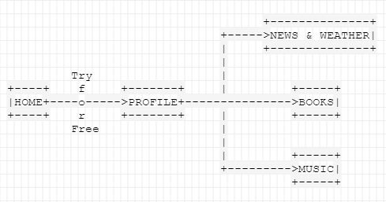
Member flow. If the user isn't registered, then they must do so. A registered user can sign in and this would take the member to their customized profile page. In addition to all the actions allowed for a guest, a registered user can perform a host of other activities. They can bookmark a book or music item from the Books/Music tab and these would populate the user's profile and bookmarks pages. Books and audio content are organized in the form of a reading list and playlist respectively. Items can be removed individually from each of these lists with immediate page updation. Signed in users can also view other members, search among them, view their bookmarks, follow them and comment on their favorites.
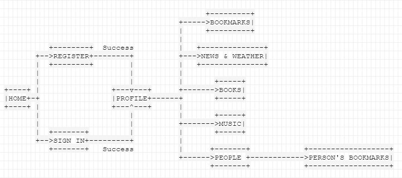
Details
Home.
This page welcomes you to my web application. It gives you an overview of the various features available by employing carousels and a short description. You may read the documentation or source code using the provided navigation bar. However, the primary function of this page is to introduce you to my application and let you in.
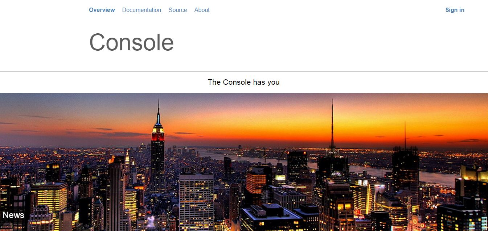
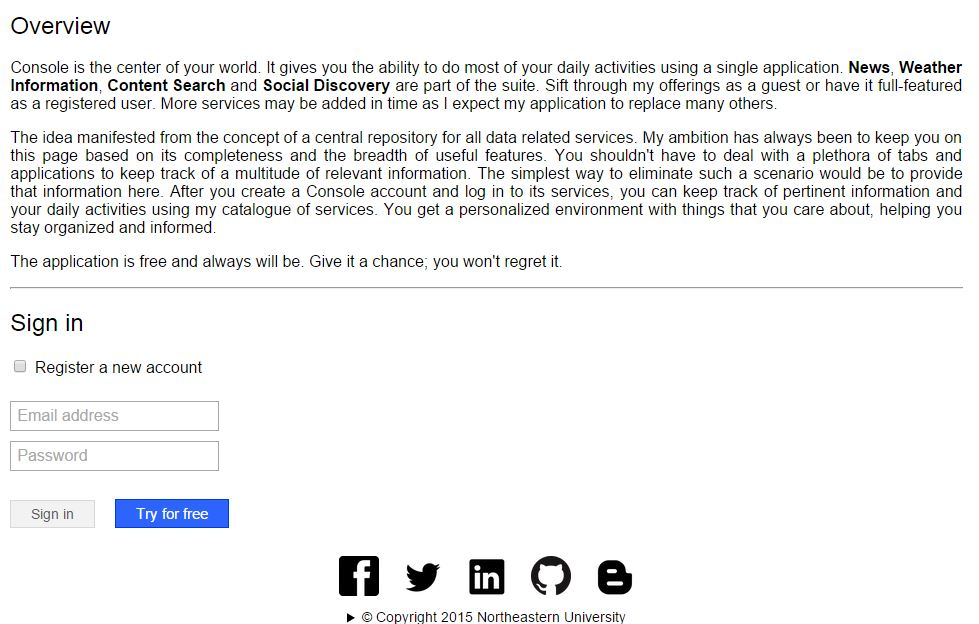
You may choose to continue as a guest user and limit yourself to content search and consumption or sign in using your existing credentials. User registration is facilitated in the same section by clicking on a check box to reveal the registration form. Once you sign in, my web application moves you to your own profile page.
Profile.
The profile page is a complete view of your likes, social circle and activities on my website. User personalization is valued and the first instance to be seen is the option to represent your personality using a cover picture. The selection is limited to a restricted set for now. The cover picture is part of your profile and sticks to your selection through sessions. If you are a guest, this choice is not remembered.
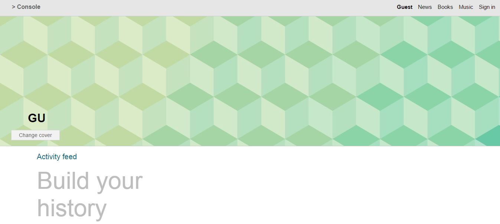
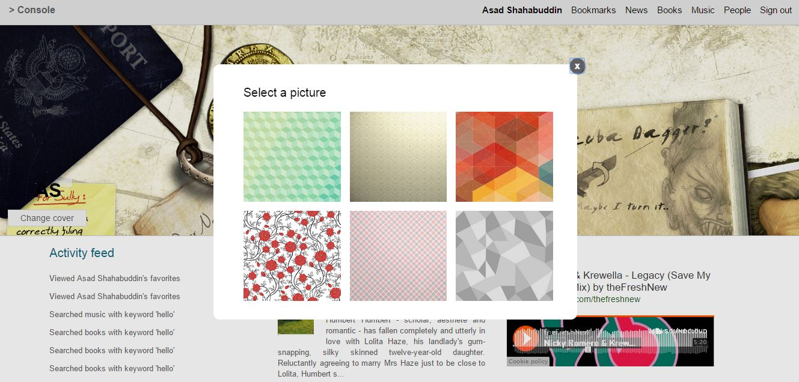
As you start executing actions of any kind, the application gives you a historical trace of activities while limiting them to your last ten. This is followed by your circle - people who follow you and those you have followed. That's column number one. The second column shows your favorite books. Each one has a thumbnail (or a filler picture if none is available), title, author and a short description going for it. Books are followed by a column showing your favorite music. You can play the audio content right there. This completes the scope of a profile page.
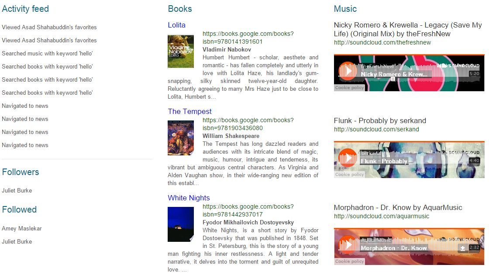
News.
The news service is pretty straightforward. You get a current list of headlines from around the world. The list changes (not referring to auto-refresh) with new incoming headlines. A news item includes the title and a short description. When you click on the news item, it takes you to the full story on The New York Times website, which also happens to be the source for all news on my website.
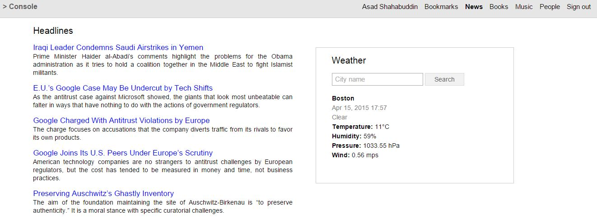
Weather.
Weather conditions are given to a user in the news page by making use of a weather card and the Open Weather Map API. The weather card would display weather conditions for your home city by default. The home city is provided by you during registration. You can always query weather for any city in the world by typing its name. The information returned consists of the city name (of course), the current data and time, a one-word summary (e.g., clouds, rain, etc.), the temperature in degrees celsuis, humidity in terms of percentage, pressure in hPa (hectopascal) and wind speed in meters per second. If you are a guest user, the weather card shows no information by default and asks you to give it a go.
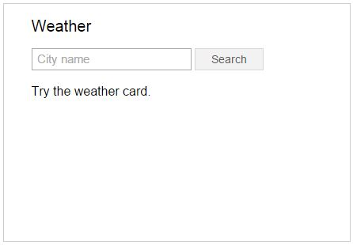
Books.
Books is based on the Google Books API. You are given a search bar and that's the basic premise. You type the partial or full name of a book you want to search for and click on the button next to it. The result consists of a number of book items which match the search query. Each item consists of the book title, a thumbnail preview of the cover, its Google Books URL, author and a short description. One can click on a book's title to read or preview it in Google Books. You can bookmark any of the items to save it to your reading list available on your bookmarks and profile pages. Switching between tabs does not erase the previous search results. Bookmarking feature is exclusive to registered users.
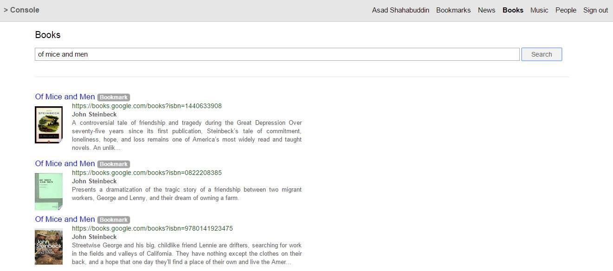
Music.
Music works just like Books. You type the name of a song or artist in the search bar and click on the search button. You results consists of embedded players for matching audio content on SoundCloud. You can play any item within the page and bookmark if you like it. Bookmarked music will constitute a single playlist and become visible on the bookmarks and profile pages. The API-provided player lets you seek the track at any point within its timeline and share it to a variety of social networks. As with books, previous search results persist on tab switching as long as the application isn't refreshed (page reload).
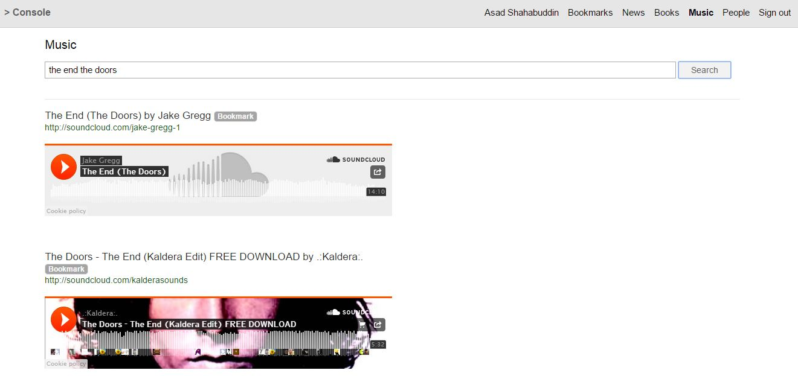
Bookmarks.
Bookmarks page shows a user's favorite books and music in the form of a reading list and playlist respectively. You can click on a book's title to read or preview it in Google Books. The list is mutable and you may remove a book from your favorites. The list refreshes immediately to reflect a deleted item. The user's playlist consists of playable tracks previously added to his/her favorites. Individual tracks can be purged from the playlist. A user may also comment on his/her favorites' thread for everyone to see. Bookmarks are visible on the user's profile page too but without any mutability since the profile page is supposed to be an overview of your likes and favorites. Editing lists should be and is available only on the bookmarks page.

People.
This feature is meant for registered users who are also signed in. You get a list of all people registered on my web application.
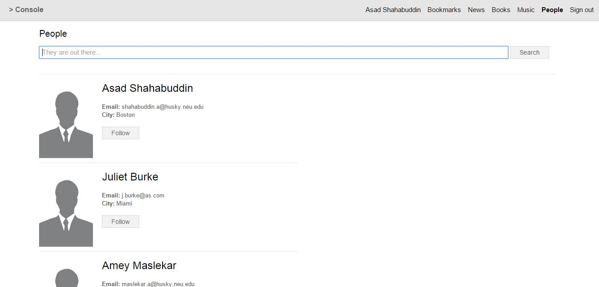
However, that's not the best way to find people, which gives way to a search utility. The user gets a search bar one more time which can be used to search registered accounts based on the search query. The search is not limited to user names but all fields used to register a person. The scope of search is therefore broad.
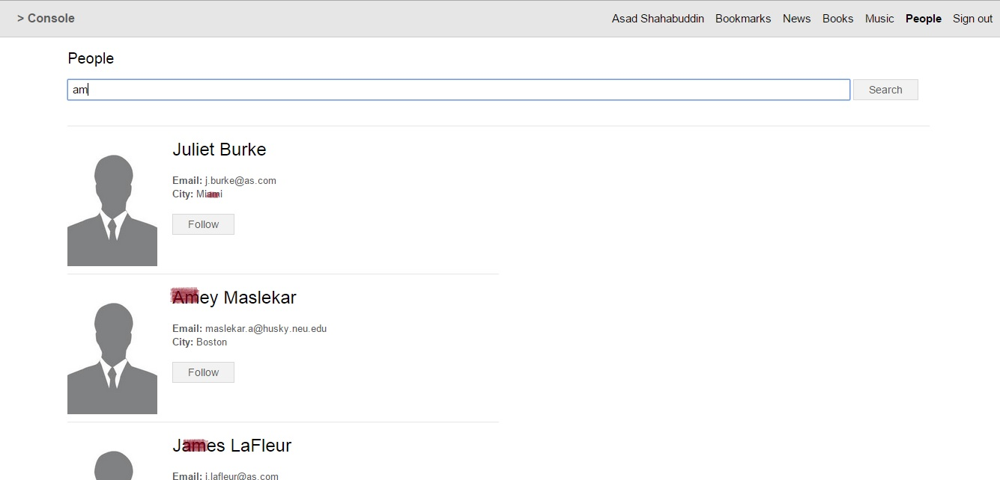
It doesn't end there. You can click on any of the names to view that member's favorites (reading list and playlist), or follow them by clicking the follow button. When you follow someone, his/her name is added to the list of people you follow shown on the profile page. Moreover, that person would have you as a follower on their profile page. The idea of social networking in enforced by allowing a user to comment on another's favorites. Comments thread is globally visible and it's another privileged feature for valid and signed in users.
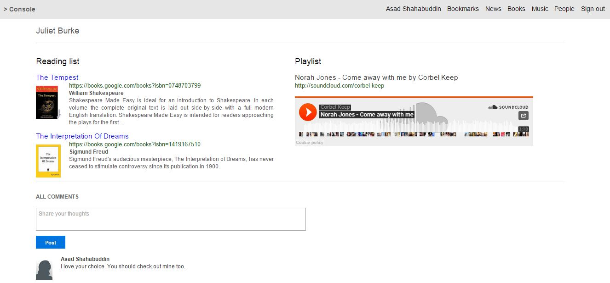
Future scope
As with every application, there's room for improvement and feature upgrades. At this point of time, a user cannot upload his/her profile picture or update one's credentials. A member can be followed multiple times and the followers/following list does not link to the corresponding user's favorites. These are areas with space to grow. Furthermore, pagination for search results could minimize the number of search operations executed.
Support
The application has been thoroughly tested and is fully supported on Google Chrome. All the features have also been tested on Mozilla Firefox for desktop and Safari for OS X and iOS. Apart from visual inconsistencies (e.g., modal window on the profile page), things function on these browsers too.
Source
Under the hood - HTML, CSS, JavaScript, RESTful service, Node.js server
Home - HTML, JavaScript 1, JavaScript 2
Profile - HTML, JavaScript
News and Weather - HTML, JavaScript
Books - HTML, JavaScript
Music - HTML, JavaScript
Bookmarks - HTML, JavaScript
People - HTML 1, HTML 2, JavaScript 1, JavaScript 2
Technology
The following technologies have been combined to build this project:
- HTML
- CSS
- JavaScript
- jQuery
- MongoDB
- Express.js
- AngularJS
- Node.js
- Passport.js